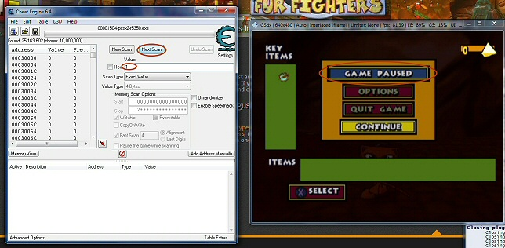

Debug Menu
This page will show you how to access the debug menu on Fur Fighters and Fur Fighters: Viggo's Revenge. Special shoutout to Youtuber Resolute for showing me this trick!It uses the same method on both versions, but has an extra advantage for those using the Dreamcast version on an emulator - it can break the black screen errors!
Problem? Click here to scroll straight to the Troubleshoot area
Step 1
Open both programs. In Cheat Engine, click the little computer icon near the top left and select either nullDC or PCSX2 from the drop down menu.
Step 2
Load your game. Open any game file or start a new one, it won't matter. It also doesn't matter if the screen goes black on Dreamcast, we can access it here anyway.

Step 3
On Cheat Engine, change the 'Value' to 0 and click 'First Scan'.

Step 4
Pause the game. Return to Cheat Engine and input the Value as 1, then click 'Next Scan'.
Step 5
Unpause the game. Return to Cheat Engine and input the Value as 0, then click 'Next Scan'.

Step 6
Repeat steps 4 and 5 until you get a very short list (usually less than 10 addresses). Unpause the game if paused. Double click the first one on the list, and change the value at the bottom to '2'. Click okay.

Step 7
Is the game paused without you pressing anything? If so, you've found the code! If not, try the next code down. You can delete the one you tried if you want to.
Step 8
Once you've got the code, you can switch it to 3 to access the debug menu and 4 to access the free camera. On the Dreamcast version, switching the value to 4 just a second after you see the loading screen to the level and switching it back to 0 after 4-5 seconds can prevent the black screen glitch.
Troubleshooting
A: It corrects the problem about 90% of the time in my experience, BUT - one easy way for it to fail is by switching the value to 4 too early (either before the loading screen shows or directly after) or by switching it too late (about 2-3 seconds after the loading screen disappears). It is also possible to switch the value back to 0 too early as well. If the VMU is present, I recommend switching back to 0 only after your Fur Fighter image turns up.
Q: Most of the debug options don't work.
A: Some of the options have been removed for the final game. These are mostly things to do with development, such as viewing the character wireframes. Most of the things that people will want to use (ie. invulnerability, tokens, weapons) still work like a charm.
Q: The debug options aren't showing on the Dreamcast version.
A: The debug options only show on certain levels for some reason. Try Fur Fighter Village, that usually works.
Q: I can't get the numbers down enough.
A: Try moving around when the game is unpaused. That usually scatters a lot of the other values around and makes the list go down quicker.
Total Fur Fighters is © 2001-2018 Fur Fighter Master aka RadSpyro. Website design © Kari of xemnas.net. Fur Fighters belongs to Muffin Games.